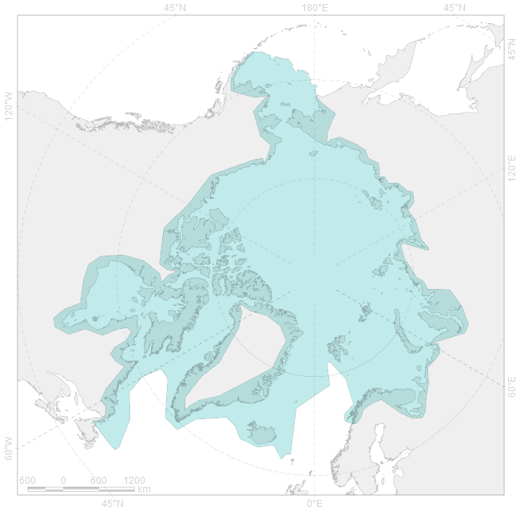
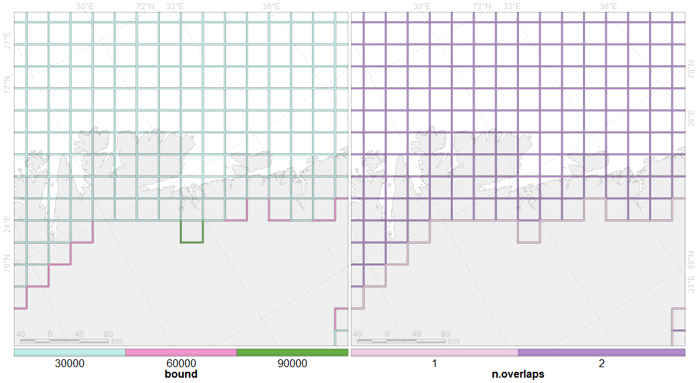
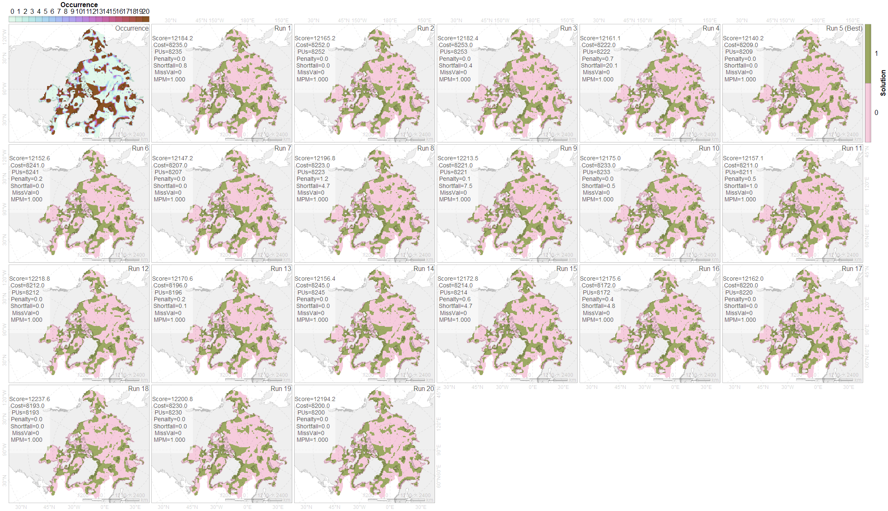
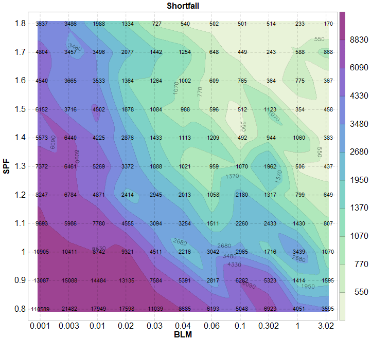
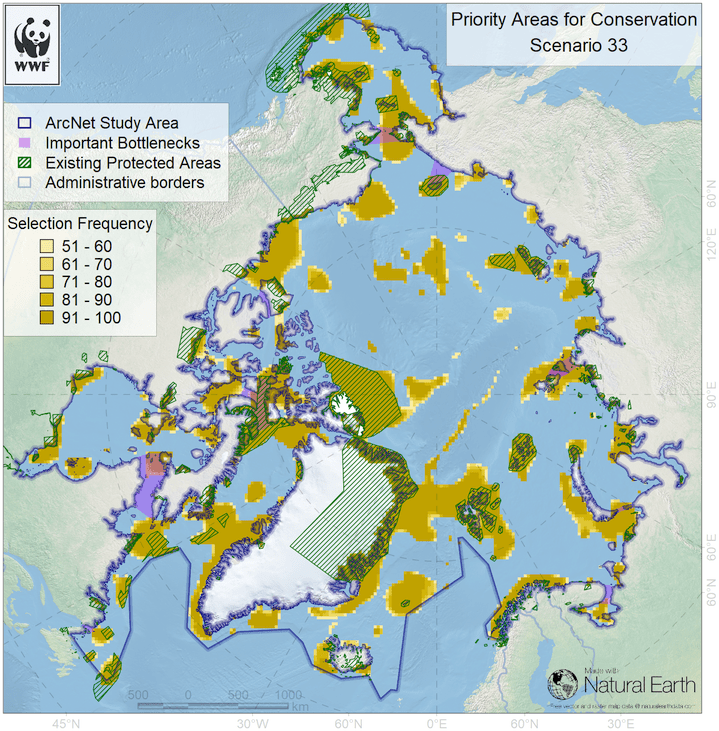

Data processing
….
N. Platonov then prepared files for the Marxan runs using a purpose-made routineand initiated Marxan tests. The routine (a script in R programming language (version 3.6) (R Core Team, 2020) was used for:
Initialising the Marxan grid of planning units.
Здесь имеется в виду генерирование квадратной 30 км сетки в равновеликой проекции Ламберта (полярная, северное полушарие) с нулевым меридианом 0°, ее обрезка по границе Study Area.
Study Area

Дополнительная информация: расстояние в км от центра ячейки до береговой линии (inland) и доля приходящейся на сушу площади ячейки (coverland)
Необходимый атрибут -
ID, который используется для идентификации ячейки в конфигурационных файлах*.datМарксана. Для Марксана этот файл не нужен, но зато необходим для визуализации результатов Марксана.Preparing the bounding file from Marxan grid.
Это файл
bound.dat.id1 id2 boundary 1 10001 10001 60 2 10002 10002 30 3 10003 10003 30 45873 32678 32674 30 45874 32677 32676 30 45875 32678 32677 30Для его подготовки формируется пространственный файл с линейной пространственной геометрией, атрибутивная таблица которого содержит информацию об отношении соседних ячеек друг к другу.
Атрибуты, используемые для определения отношений между соседними ячейками
GIS data resampling to Marxan grid (import):
Эксперты предоставляют данные в виде векторных ГИС файлов с различной геометрией (точка, линия, полигон), которые нужно преобразовать в полигоны, образованные ячейками Марксана, при этом сохранив суммарное значения атрибута Amount.
Data attribute and geometry management for update only changed source.
Подготовка данных – итерационный процесс из-за изменений структуры данных (исправление ошибок в геометрии, исправление ошибок в атрибутивной таблице, повышение качества предоставляемых данных, появление новых источников данных). Так как resampling сложной геометрии может занимать много времени, то для обновленного набора данных предварительно анализируется изменение для каждого элемента набора, и если изменений нет, то resampling не делается, а элемент данных берется из предыдущего набора.
Preferred manipulation with spatial geometry of vector data; interim rasterization was used only for cases when geometry was acceptable generally, but invalid and un-repaired for operation of spatial intersection.
В проекте “MPA Russia” resampling осуществлялся методом палетки (промежуточная растеризация в сетку с промежуточной ячейкой с отношением сторон 1:5 к исходной). В этом проекте осуществлялось пересечение векторных объектов (обычно полигонов исходных данных и полигонов сети ячеек). В тех случаях, когда не удавалось построить пересечение геометрий либо из-за ошибок в геометрии, которые не получалось исправить, либо из-за неверной геометрии, осуществлялась промежуточная растеризация.
Conditional assigning “cost” and “status” data fields for planning units in requesting scenarios (usually for the later ArcNet analysis versions).
Для некоторых сценариев с помощью дополнительного ГИС-слоя задавались условия, по которым изменялся статус или стоимость ячеек, с которыми этот слой перекрывался. Для поздних версий проекта это слой
CAFFandRussiaFederalCanada.shp, обязывающий Марсан принудительное включение ячеек с перекрытием более 50% этим слоем.Batching Marxan running:
Для улучшения производительности произведена направленная на уменьшение пользовательского взаимодействия оптимизация с помощью пакетной обработки
Regarding to scenario parameters, on-the-fly transformation of basic template, which contains complete ArcNet data set in Marxan input formats.
Для запуска Марксана необходим набор определенных файлов. Для различных сценариев некоторые файлы не меняются совсем, некоторы изменяются частично. Поэтому был подготовлен набор файлов, используемый как шаблон, и перед запуском нового сценария все необходимые изменения в шаблон вносились «на лету» по файлу с метаданными.
Using explicit random seed for reproductivity.
В основном конфигурационном файле Марксана
input.datесть параметрRANDSEED, для генератора псевдослучайных чисел, который используется для формирования последовательности выбираемых ячеек на каждой итерации. Если задать значение-1, то Марксан сам выбирает, какую генерировать последовательность псевдослучайных чисел. В проекте при формировании сценария дляRANDSEEDзадавалось трехзначное число единожды, поэтому сколько бы раз не запускался Марксан на различных компьютерах, всегда получался один и тот же результат. При случайном повторном запуске сценария это позволяет получить те же результаты.Transform Marxan output to GIS data (export).
Преобразование табличных результатов Марксан в формат ГИС, используемый для визуализации и дальнейшего анализа.
Multipanel data visualisation of Marxan output and derived statistics.
После каждого запуска сценария формировался графический файл с несколькими панелями, чтобы охватить взглядом результаты нескольких прогонов. На каждой панели приведена статистическая сводка прогона в виде текстовой аннотации.
Пример представления результатов для сценария с 20 прогонами.
Также формировался графический файл с множеством панелей, как результат лучшего прогона соотносится с геометрией и содержимым (Amount) охраняемых сущностей (здесь не показано из-за малого масштаба панелей).
Batch bootstrapping of Marxan parameters
Бутстраппинг (калибровка) - формирование набора отклонений некоторых входных параметров Марксана от их начальных значений с целью формирования новых значений, при которых результаты прогона соответствуют целям проекта по группировке выбираемых Марксаном ячеек и обеспечивают устойчивость выбора групп при различных прогонах.
On-the-fly transformation of basic template.
Использована пакетная обработка по формированию конфигурационных файлов Марксана на основе шаблона и изменяемых значений входных параметров
Visualisation
Построение графического представления результатов бутстраппинга для выбора значений изменяемых параметров на основе визуального анализа.

Static (PNG) and interactive (HTML) representation of Marxan output for end-users.
Пример статического представления результатов
Пример интерактивного представления результатов